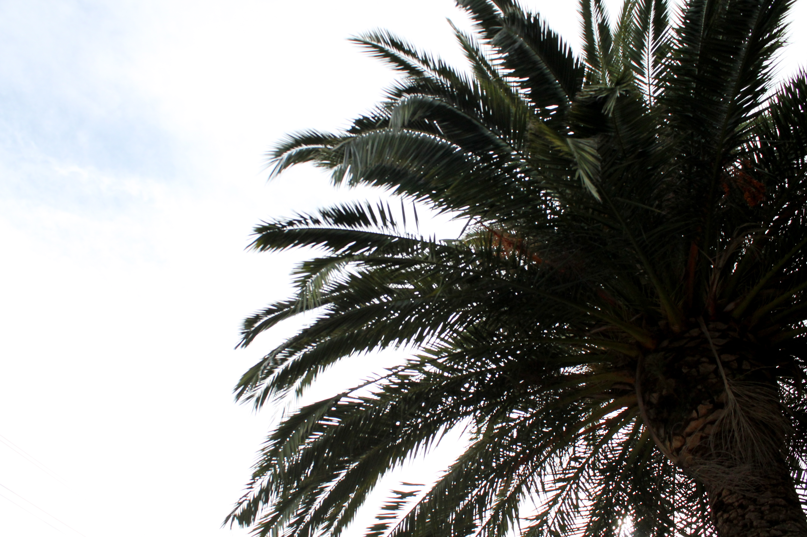
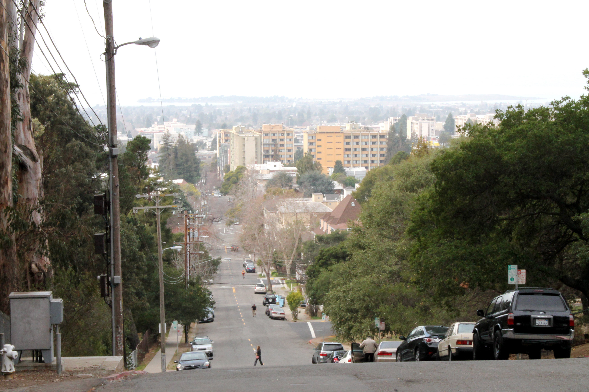
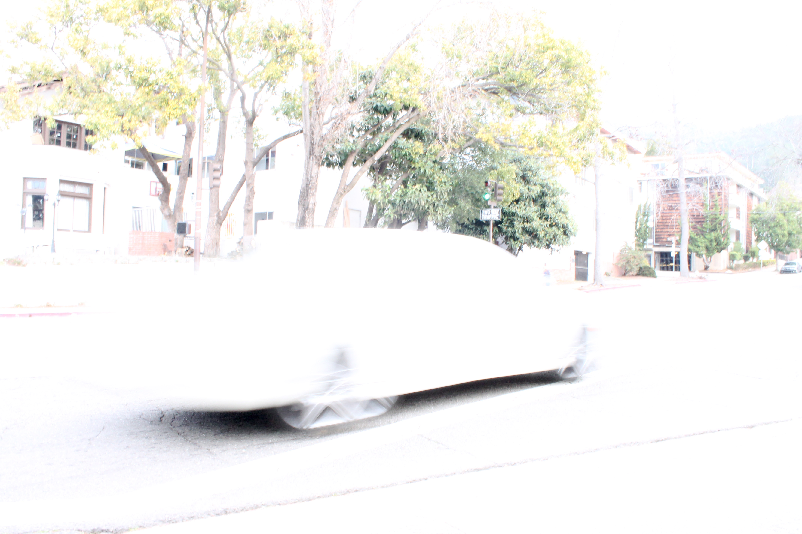

I want to tell you some things.
January 27, 2014.
I am so excited to be adding the very first blog post to my site!
Today, I took my camera to some of the places I've fallen in love with here in Berkeley. The skies were perfect- it was cloudy enough to take sky pictures, and clear enough to capture the colors of beautiful California.
Soon, I'll get brave enough to take pictures of the people in Berkeley... A zoom lens would be nice.
11:30am (Berkeley, CA) 


I saw a homeless man riding his shopping cart down this hill. Impressive? Yes.


I will never say no to a picture of a squirrel. They always look so mad...


FINALLY, a familiar face! :)
Thanks for reading!